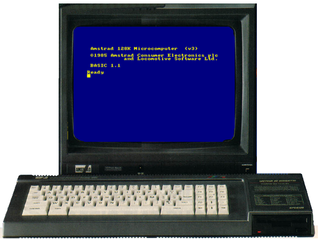
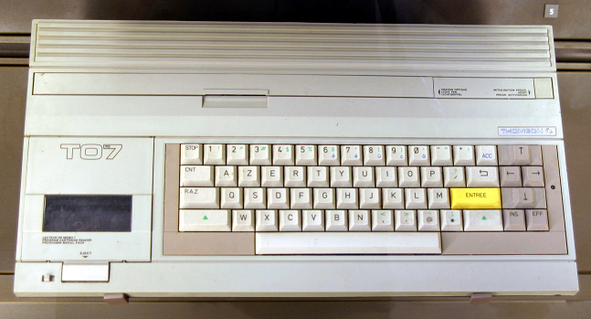
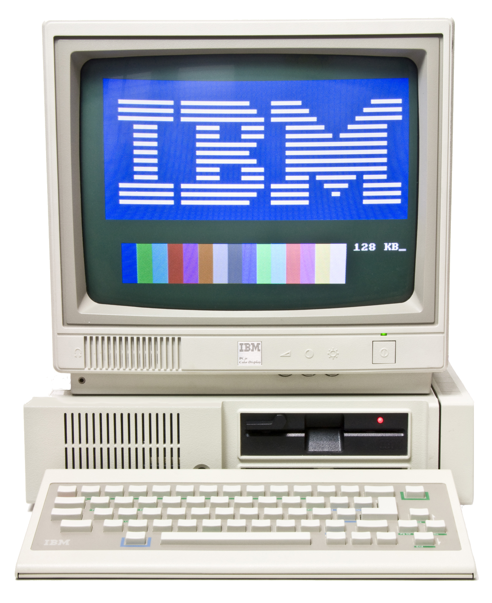
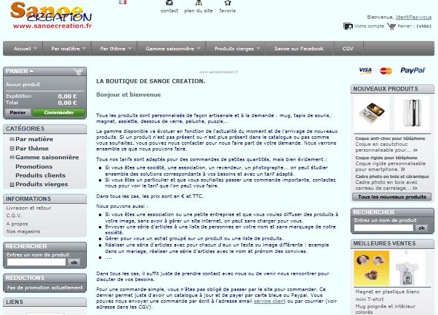
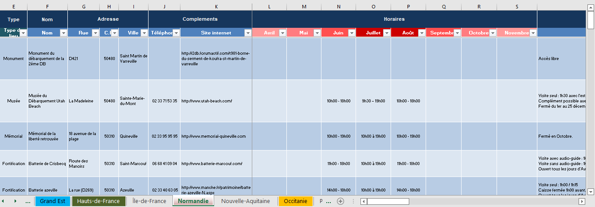

A propos de moi et de ce site.
A propos de moi
Je m'appelle Stéphane Mouron.
Je suis passionné par l'informatique depuis les années 80.
J'ai commencé avec un Amstrad CPC 6128 chez moi et un Thomson TO7 en cours au lycée. Avec leur langage de programmation le Basic.
Puis est arivé l'IBM Personal Computer et ces commandes DOS.



Depuis, je n'ai pas vraiment arrêté mais à l'époque, les conseillés d'orientation scolaire, ne voyaient pas l'informatique comme un métier d'avenir, donc j'ai fait mes études dans un autre domaine.
Durant ma carrière, j'ai eu la chance de pouvoir intégrer un bureau d'étude comme testeur.
Le produit était un logiciel qui était intégré dans une gamme de produit professionnel de base Pc et à destination du commerce.
Mais la programmation des années 80 me manquait.
Du coup, par défis avec moi même, de 2011 à 2015, j'ai créé et géré une boutique en ligne.
Le site internet était avec la solution Prestashop (version 1.5.41).

Cela a été un très gros défis car je ne connaissais rien. Et au final, cela a été une très bonne école mais c'était en plus de mon activité principale. Je n'avais pas assez de temps pour m'y consacrer correctement. J'ai dû arrêter.
L'origine de ce site
Une de mes autres pations, c'est de visiter les sites touristiques. Et avant chaque départ en vacance, ma première occupation est de récupérer un maximum d'informations sur ce qui est visitable
En 2011, j'ai décidé d'aller voir les plages du débarquement en Normandie. Comme de nombreuses personnes, j'ai été sur différents sites internet sur le tourisme du secteur.
Et là, cela a été une grande surprise car aucun site n'indiquait les mêmes lieux.
Et une fois sur place, je me suis apperçu que certain sites, n'étaient indiqué par personne...
J'ai commencé à tout récupérer ce que je pouvais un peu partout et à tout synthétiser dans un tableau Excel.
Et je me suis retrouvé avec plus du double par rapport au départ.
De puis, je fais ça, à chaque nouvelle région que je vais visiter. Mais du coup, je me retrouve avec une base de donnée vraiment énorme et pas très facile à utiliser.

Du coup, ayant décidé de me replonger dans la programmation, je profite d'utiliser cette base de données pour créer ce site internet.
Ce site est avant tout là pour tester mes avancer dans le code.
Mon premier défis a été de créer une carte de France avec des zones cliquables. Gros défis et très long travail de découpe de la carte de France par région.
Puis est arrivé le défis de créer une région avec une image splitée.
Et ma dernière évolution a été d'essayer de rendre le site le plus responsif possible et rendre la page d'accueil accessible.
Ce site est très loin d'être parfais. Il y a beaucoup de choses qui ne vont pas et ne sont sûrement pas conforme à ce que ferait un développeur confirmé. Mais je reste content de moi.
Toutes les informations sur les sites internets (horaires, tarifs, conditions...) proviennent des sites eux mêmes mais réalisé le jour où j'ai créé les pages.
Actuellement, il n'y a pas de bases de données sur le site. Les pages sont donc créés manuellement depuis Excel.
Si vous êtes le propriétaire d'un de ces sites et que vous voulez apporter une correction, ou que vous souhaitez ne pas voir votre site affiché ici, dite le moi par email.
Les photos sont dans la majorité des photos récupérées sur internet. Si des photos vous appartiennent et que vous souhaitez que je les retire, dite le moi également par email.
Futur évolutions
Les prochaines évolutions et donc défis sont multiples :
- Ajouter une base de données.
- Faire la droite du site à partir de la base de données.
- Ajouter une vrai carte de navigation.
- Créer la version par départements.
- Optimiser toutes les images et y ajouter un filigrame avec le nom du propriétaire.
- Voir le problème avec la carte de France qui n'est pas responsive.